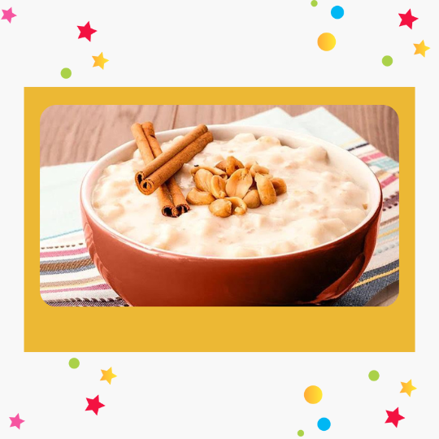

receitas da lis
Canjica Cremosa
- 400g Canjica Branca
- 300g de leite condensado
- 1 litro de leite
- 250g de creme de leite
- 300g de amendoim torrado e triturado (opcional)
- 750 ml de água
Ingredientes
Modo de Preparo
Cozinhe a canjica com a água até que ela fique
"al dente".
Escorra a canjica em seguida coloque em uma panela juntamente com o leite e o leite condensado, leve ao fogo
alto até levantar fervura.
Após levantar fervura abaixe o fogo e cozinhe por aproximadamente 10 minutos,
mexa constantemente para não grudar no fundo da panela.
Desligue o fogo e junte o creme de leite e mexa bem para incorporar.
Coloque a canjica em um recipiente e sirva a seguir.
Se preferir polvilhe amendoim triturado.